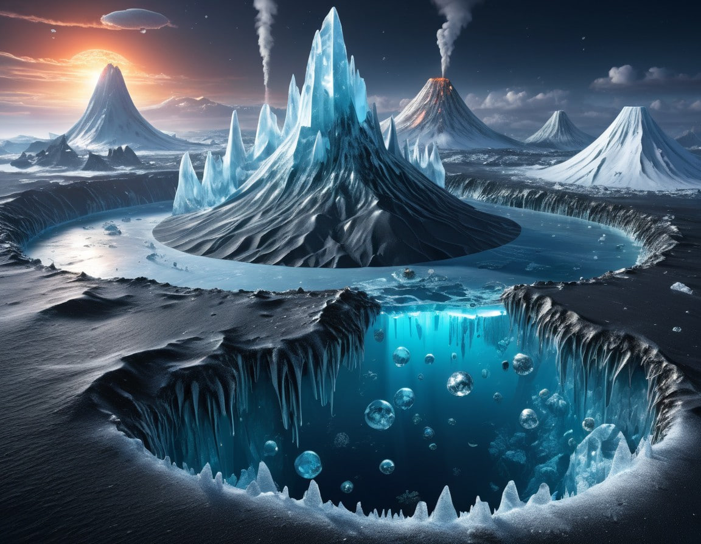
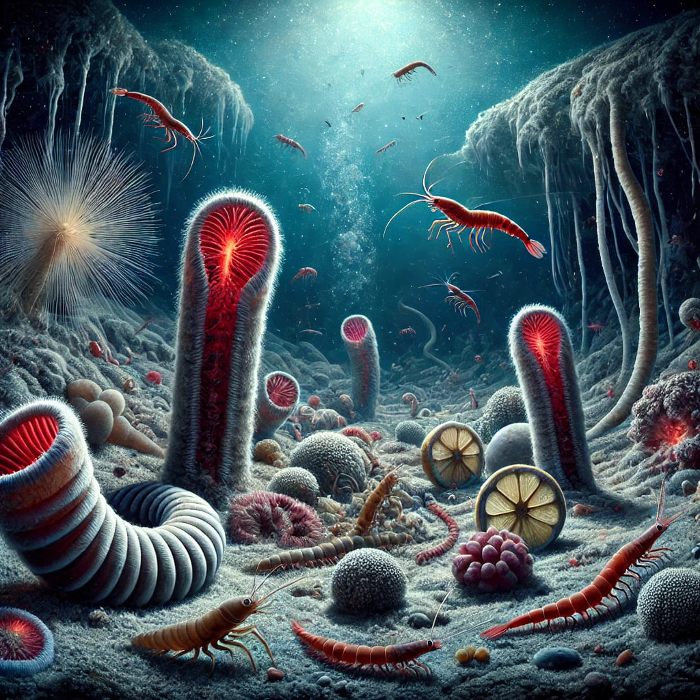
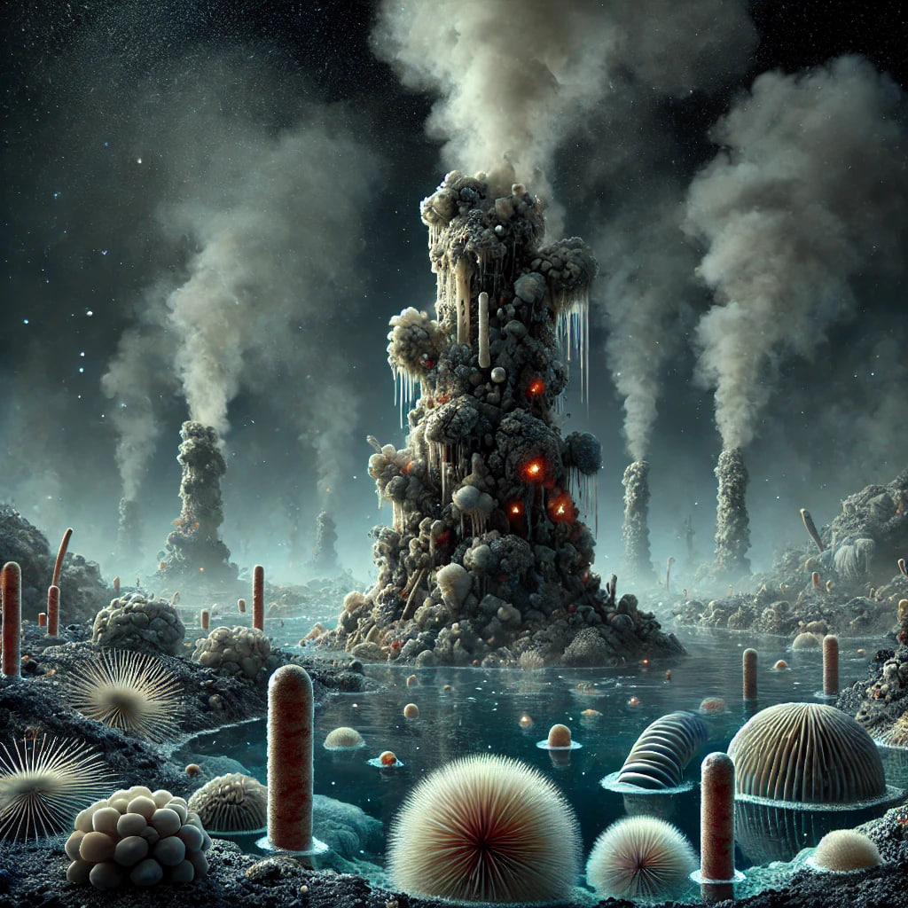
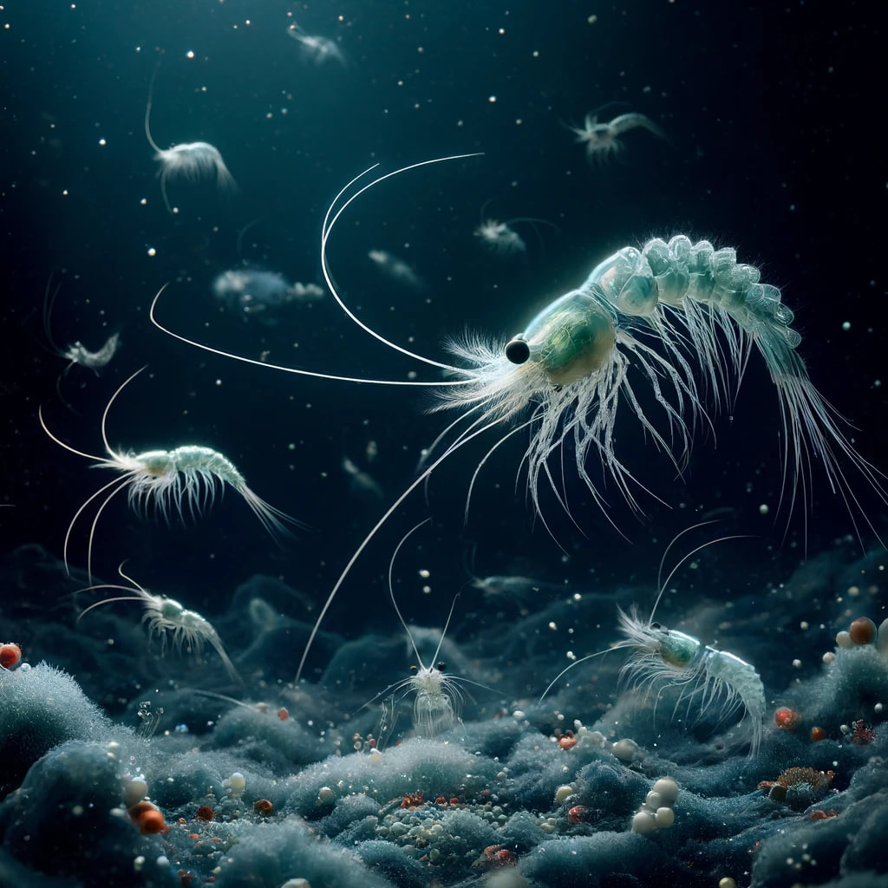
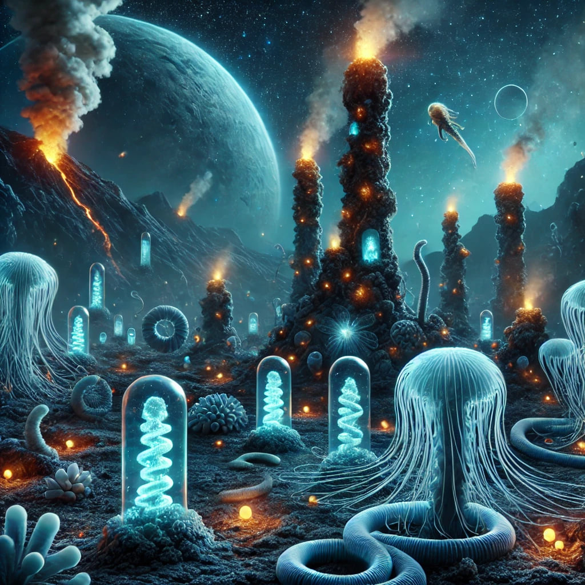

Explore the oceanic world beneath the ice
Oxylas is a distant oceanic planet covered by a thick layer of ice...
The planet Oxylas is a world unlike any other—an endless ocean with not a single landmass in sight. Its waters stretch down for kilometers beneath a thick layer of ice. The surface layers are cold and shrouded in darkness, as the planet is far from its distant star, leaving very little light to break through. But as you dive deeper, the temperature plummets and the pressure becomes almost unbearable. Yet, life has found a way to survive here, adapting to the extreme cold and crushing depths in ways that seem almost unimaginable.
In the pitch-black depths of Oxylas' ocean, where sunlight never reaches, life has evolved a remarkable way to thrive. Instead of relying on sunlight for energy, organisms turn to chemosynthesis, a process that taps into the chemical richness of their environment. Around hydrothermal vents and cold seeps on the ocean floor, life flourishes thanks to two key reactions: Hydrogen Sulfide Oxidation: Microorganisms at hydrothermal vents oxidize hydrogen sulfide (H₂S) to produce energy, turning it into sulfate, water, and a burst of vital energy. 𝐻 2 𝑆 + 𝑂 2 → 𝑆 𝑂 4 2 − + 𝐻 2 𝑂 + 𝐸 𝑛 𝑒 𝑟 𝑔 𝑦 H 2 S+O 2 →SO 4 2− +H 2 O+Energy Methane Oxidation: In the frigid regions around cold seeps, other organisms use methane (CH₄) as their energy source, converting it into carbon dioxide, water, and energy. 𝐶 𝐻 4 + 𝑂 2 → 𝐶 𝑂 2 + 𝐻 2 𝑂 + 𝐸 𝑛 𝑒 𝑟 𝑔 𝑦 CH 4 +O 2 →CO 2 +H 2 O+Energy These hidden chemical reactions power entire ecosystems, allowing life to endure in the dark, icy waters of Oxylas' vast ocean.
Beneath the icy surface of Oxylas’ ocean lies a world full of strange and fascinating life forms, thriving in extreme environments. Towering hydrothermal vents, known as "black smokers," spew superheated, mineral-rich water from the planet's crust, supporting microbial communities that feed on sulfur compounds. In other regions, cold seeps release methane and hydrocarbons from the seafloor, where methane-oxidizing bacteria serve as the foundation of unique ecosystems. Periodic underwater volcanic eruptions reshape the ocean floor, with fresh lava fields and vent formations providing new habitats for life. The mineral-rich ocean floor, coated in metals like iron, nickel, and manganese, offers essential resources that organisms incorporate into their structures to survive in this harsh environment.
In the mysterious depths of Oxylas' ocean, a vibrant ecosystem thrives, beginning with microbial communities of chemosynthetic bacteria and archaea that form the foundation of the food chain around hydrothermal vents and cold seeps. These essential microbes engage in symbiotic relationships, providing vital nutrients for larger organisms. Among them are the giant tube worms, which can grow several meters long and rely on symbiotic bacteria to convert sulfur into energy, making them key players in the vent ecosystems. Floating through the water are krill-like organisms and shrimp that sustain themselves by filter-feeding on bacteria and detritus. Meanwhile, cephalopod-like predators, equipped with bioluminescent appendages, attract prey with their glowing light, their transparent or reflective bodies helping them blend into the dark surroundings. Deep-sea coral structures form intricate habitats around the vents, fostering diverse ecosystems, while sponges filter the water and play crucial roles in nutrient recycling, contributing to the delicate balance of life in this alien underwater world.
Organisms inhabiting the extreme environments near hydrothermal vents have developed remarkable adaptations to survive their harsh surroundings. They possess heat-resistant proteins and cellular structures that enable them to endure near-boiling temperatures. In the absence of light, these creatures rely on highly sensitive chemical sensors to detect food and navigate their dark world. Additionally, life forms in the deep ocean have adapted to withstand immense pressure, featuring flexible cell membranes and specialized enzymes that facilitate efficient metabolism in these conditions. Many of these organisms also exhibit bioluminescence, using emitted light for attracting prey or communicating with one another, a trait particularly prevalent among predators and social species.
